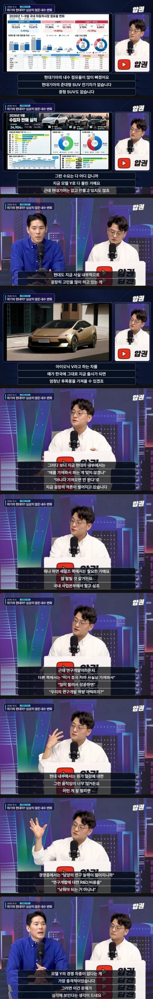
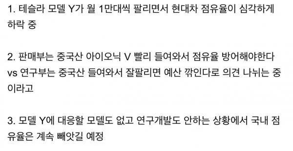

논외로gv80하브 보니 얘네 정책이 보임.
성능적 장점은 하나도 안보이는데 개발비는 뽑고싶고.. 무조건 껴야하는 시트옵션 가격 상승 기본시트는 인조 가죽ㅋㅋㅋ
결국올리고싶은 가격 올림. 전략이 옵션질뿐임.
비너스가 필요한게 아닌데. 차 얘기하면서 세그먼트 개념도 모르나. 난리났다는 워딩에 끼워맞추네
ㅋㅋㅋ 한국에서나 모델Y가 앞서네 어쩌네해도 글로벌 판매점유율에서는 별 영향없음ㅋㅋㅋ 유난히 한국이 테슬라 좋아하는거고 북미가 1순위라 판매전략하고 차종도 모두 거기에 맞춘거
ㅇㄱㄹㅇ 현기 아무런 문제없고 세계에서 잘나가고 있으니 이대로만하면됨 내수 한줌이라 버려도됨
아이오닉V는 중국사양 그대로 들어올수가 없어서 나오더라도 많이 바뀔텐데
현기는 안팔리면 더 좋은거 아님?
(공장 가동을 축소하며 + 자동화 명분)
아이오닉5가 모델y 대응되는거아님?
얼마나 못하고있으면 한국에서 점유율이 털리는거냐